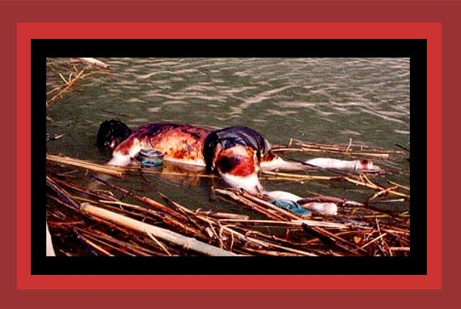

| Burma is ruled by a repressive and murderous military regime. It has bloodily broken up prodemocracy demonstrations, subjected Burmese to often lethal forced labor, and savagely warred on its rebellious ethnic minorities, such as the Karen. It also has forced prisoners and drafted civilians to porter supplies and munitions for the military, which is not only inherently dangerous, but many die through maltreatment, or are murdered when too sick or weak to work. Here is shown a photograph of a dead porter floating down Salween River from Saw Hta. Floating bodies like this, many with their hands tied behind them, are not an unusual sight on the river. For documentation, see Chapter 1 of Saving Lives, Enriching Life, and Statistics of Democide. Source: Photos of Dead Porters in the Salween river". |